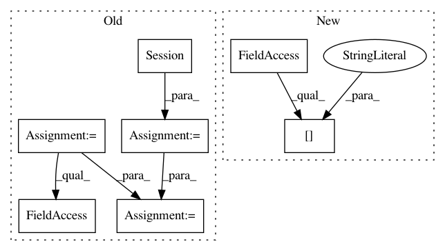

87ad8f5eb43629954755893fcb2674e53f8dc982,main.py,,evaluate,#,241
Before Change
// t_image = tf.placeholder("float32", [None, size[0], size[1], size[2]], name="input_image") // the old version of TL need to specify the image size
t_image = tf.placeholder("float32", [1, None, None, 3], name="input_image")
net_g = SRGAN_g(t_image, is_train=False, reuse=False)
//////========================== RESTORE G =============================//////
sess = tf.Session(config=tf.ConfigProto(allow_soft_placement=True, log_device_placement=False))
tl.layers.initialize_global_variables(sess)
tl.files.load_and_assign_npz(sess=sess, name=checkpoint_dir + "/g_srgan.npz", network=net_g)
//////======================= EVALUATION =============================//////
start_time = time.time()
out = sess.run(net_g.outputs, {t_image: [valid_lr_img]})
print("took: %4.4fs" % (time.time() - start_time))
print("LR size: %s / generated HR size: %s" % (size, out.shape)) // LR size: (339, 510, 3) / gen HR size: (1, 1356, 2040, 3)
print("[*] save images")
After Change
// print(valid_lr_img.min(), valid_lr_img.max())
G = get_G([1, None, None, 3])
G.load_weights(checkpoint_dir + "/g_{}.h5".format(tl.global_flag["mode"]))
G.eval()
out = G(valid_lr_img).numpy()
In pattern: SUPERPATTERN
Frequency: 3
Non-data size: 7
Instances
Project Name: tensorlayer/srgan
Commit Name: 87ad8f5eb43629954755893fcb2674e53f8dc982
Time: 2019-05-08
Author: dhsig552@163.com
File Name: main.py
Class Name:
Method Name: evaluate
Project Name: HazyResearch/fonduer
Commit Name: 3252f2117a4b693ca001613b13c28cc2d8cd9eb7
Time: 2020-02-14
Author: hiromu.hota@hal.hitachi.com
File Name: tests/candidates/test_candidates.py
Class Name:
Method Name: test_ngrams
Project Name: HazyResearch/fonduer
Commit Name: 3252f2117a4b693ca001613b13c28cc2d8cd9eb7
Time: 2020-02-14
Author: hiromu.hota@hal.hitachi.com
File Name: tests/candidates/test_candidates.py
Class Name:
Method Name: test_mention_longest_match